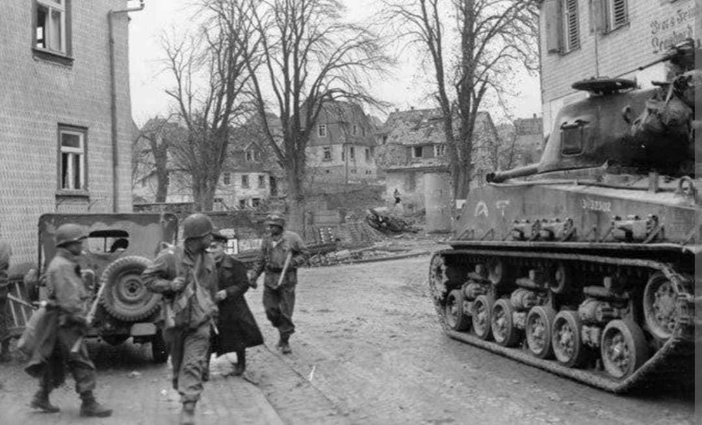
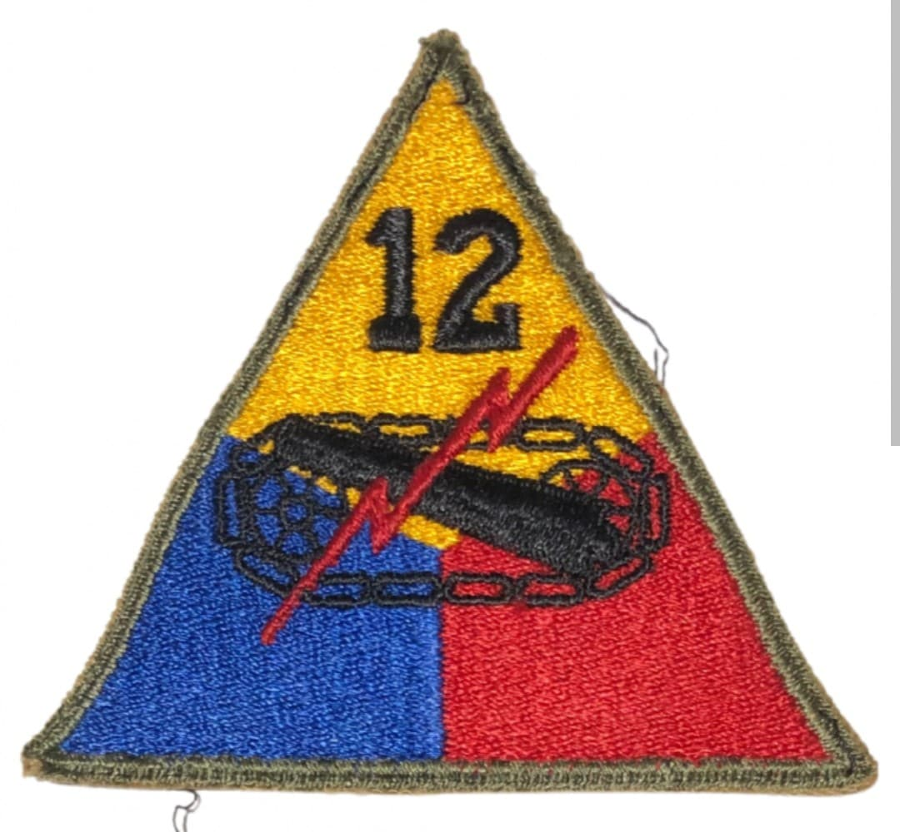
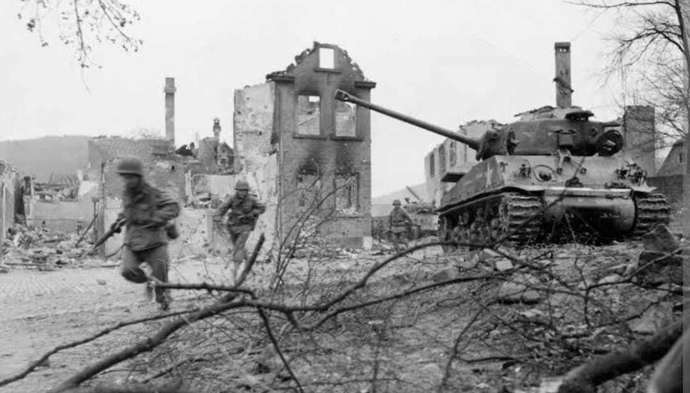

Les félins de l'enfer : de la rude traversée des Vosges aux offensives décisives en Allemagne

La 12th Armored Division (12e division blindée américaine), fièrement surnommée les « Hellcats » (Les Félins de l'Enfer), est une unité mécanisée d'élite qui s'est illustrée de manière remarquable sur le théâtre d'opérations européen à partir de la fin de l'année 1944.
Engagée au sein de la 7e armée américaine, puis brièvement rattachée aux forces du général Patton, la division a fait preuve d'une agilité tactique redoutable en surmontant les terrains difficiles des Vosges avant de jouer un rôle majeur dans l'invasion finale du territoire allemand.
Activée en novembre 1942 au Camp Campbell (Kentucky) sous les commandes successives de plusieurs officiers supérieurs avant d'être menée au combat par le major général **Roderick R. Allen**, la division a bénéficié d'un entraînement minutieux adapté à la guerre de mouvement moderne.
Son insigne d'épaule distinctif arbore une tête de chat sauvage stylisée prête à bondir sur un fond aux couleurs des forces blindées, incarnant la férocité, la vitesse et l'esprit d'initiative des troupes de choc.

Débarquée en France à l'novembre 1944, la 12th Armored fait ses débuts sur le front dans les conditions exténuantes du massif des Vosges. Affrontant un relief difficile, des températures glaciales et une résistance allemande acharnée, les « Hellcats » percent les défenses ennemies pour déboucher dans la plaine d'Alsace.
Elle contribue activement à la réduction de la poche de Colmar et stabilise les lignes alliées malgré la contre-offensive allemande hivernale (*Opération Nordwind*).

Au printemps 1945, la division passe à l'offensive générale, franchit le Rhin et s'enfonce rapidement en territoire allemand. Les groupements tactiques de la 12th Armored progressent à un rythme rapide, s'emparant de villes stratégiques, neutralisant les dernières poches de résistance fanatique de la Wehrmacht et faisant des milliers de prisonniers.
La division termine sa campagne victorieuse au sud de l'Allemagne et en Autriche, actant la fin des combats en mai 1945.
Reconnue pour son efficacité redoutable au combat, la « Hellcat Division » a prouvé que la jeunesse de ses effectifs n'avait d'égale que sa détermination. Elle demeure l'une des grandes divisions blindées de référence de la fin de la Seconde Guerre mondiale.
Page du Musée HOP WW2 – Section Unités & Divisions